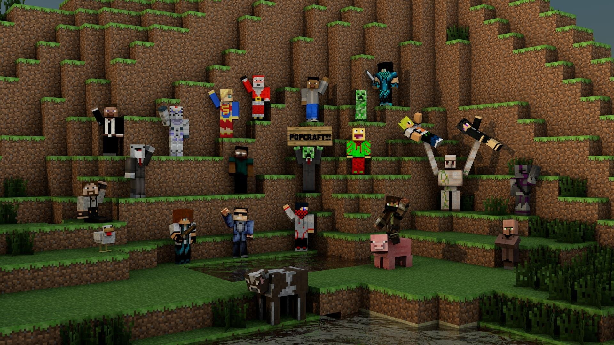

Minecraft
Minecraft (от англ. mine — «шахта; добывать» + craft — «ремесло; создавать») — компьютерная инди-игра в жанре песочницы, созданная шведским программистом Маркусом Перссоном и выпущенная его студией Mojang AB. В 2009 году Перссон опубликовал начальную версию игры; в конце 2011 года была выпущена стабильная версия для компьютеров Windows, Linux и macOS с распространением через официальный сайт. В последующие годы Minecraft была портирована на мобильные устройства под управлением Android, iOS и Windows Phone; на игровые приставки PlayStation 3, PlayStation 4, PlayStation Vita, Xbox 360, Xbox One, New Nintendo 3DS, Nintendo Switch и Wii U; и другие платформы. В 2014 году корпорация Microsoft приобрела права на Minecraft вместе со студией Mojang AB за 2,5 миллиарда долларов. В 2017 году была выпущена мультиплатформенная версия игры, объединившая различные версии для разных устройств.